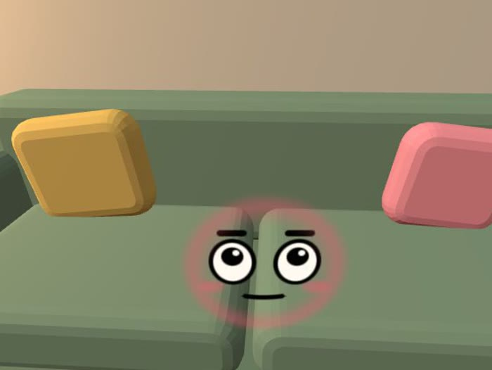

Couch
#001Built-in face, not generated
A face blooms on the real couch and flinches when you poke it.

Built-in face, not generated
Point, pinch, and the room starts talking.
The room scan already named the couch.
A face sits on it and flinches when poked.
Wake the lamp and the two of them talk.
Emulator and unit tests. No Quest run yet.
Nothing is faked while the key is missing.
Live
Pinch, face, poke, pet, flick, puppet gossip. Browser and emulator.
Setup required
Muse Spark, Muse Image, and voice. They wait for MODEL_API_KEY.
Click the couch in the browser diorama.
How to open it